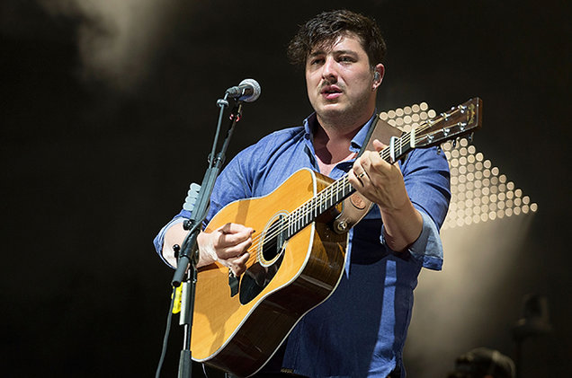
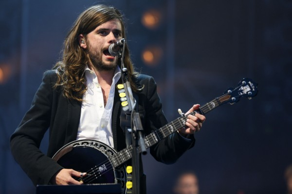
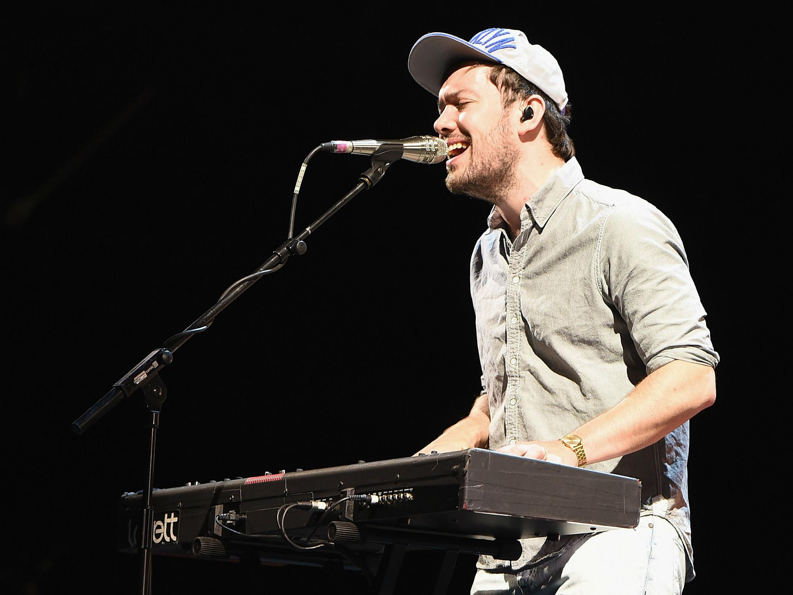
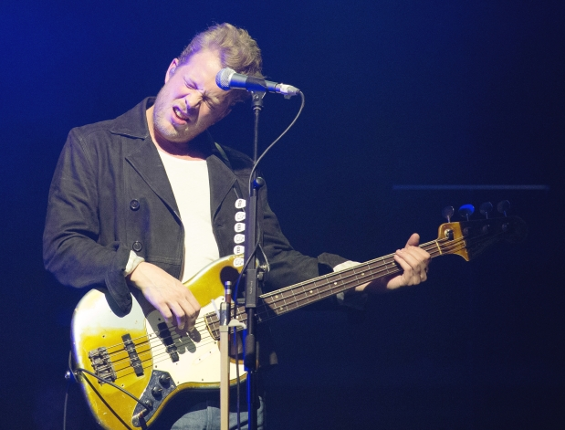

| Member Name | Picture | Description |
|---|---|---|
| Marcus Mumford |  | Marcus Oliver Johnstone Mumford is a British singer, songwriter, musician and record producer best known as the lead singer of the band Mumford and Sons. He holds American citizenship due to his place of birth. He also plays a number of instruments with the group, including guitar, drums and mandolin. Mumford was born on January 31st, 1987 in Yorba Linda, California, to English parents. As a result, he has held both British and US citizenship from birth. Mumford has an older brother, James. Mumford's family moved back to their native England when Marcus was six months old. He grew up in Wimbledon Chase, southwest London, and attended King's College School in Wimbledon. There he met future fellow band member Ben Lovett. He returned to London to focus on his music career after his first year of study at the University of Edinburgh, where he collaborated on Mumford and Sons' debut album, Sigh No More. |
| Winston Marshall |  | Winsron Aubrey Aladar Marshall is a British musician, best known as the banjoist and the lead guitarist of the folk rock band Mumford and Sons. He is also known by his stage name WN5TN, as per the credits of Mumford and Sons' third studio album Wilder Mind. Marshall was born in Wandsworth, London, England, and is the son of Sabina De Balkany and Paul Marshall, a British investor and co-founder of the Marshall Wace hedge fund. His mother is of French origin. Marshall was educated at St Paul's School, and indepedent school in London, England. He has a sister named Giovanna. |
| Ben Lovett |  | Benjamin Walter David Lovett is a British musician and producer, best known for being a member of the Grammy Award winning British folk rock band Mumford and Sons. Lovett is one of the founding members of Mumford and Sons. He attended Hallfield School in Birmingham before moving to London. Later he attended King's College School in Wimbledon which he attended with Marcus Mumford. It was in London that he met fellow band members, Ted Dwane and Winston Marshall. |
| Ted Dwane |  | Ted Dwane is a British musician and photographer, best known for being the bassist of the Grammy Award-winning British folk rock band Mumford and Sons. Prior to this he was the bassist in experimental folk band Moulettes. Dwane is a founding member of the British folk band Mumford and Sons. He plays double bass, bass guitar, drums, guitar and provides backing vocals. Dwane performed with two of his current band members, Marcus Mumford and Winston Marshall, with Laura Marling before Mumford and Sons. |